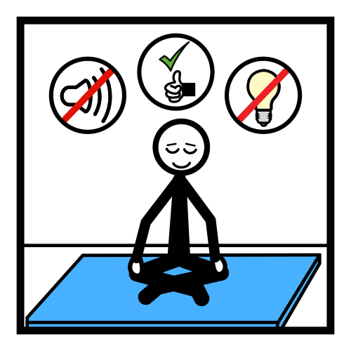

Apoyo visual · Anticipación · Infantil y Primaria
Fiestas
sin sobresaltos
Para preparar con tiempo el festival de Navidad o de invierno, el fin de trimestre y las demás fiestas del cole.
Pictogramas: Sergio Palao. ARASAAC (Gobierno de Aragón). CC BY-NC-SA. Los demás dibujos son de IdEducando.
Licencia CC BY-NC-SA 4.0
ideducando.es
Antes de empezar
De un vistazo
Una fiesta cambia el horario, el sitio, el ruido y la gente de un día normal. Con este material, contáis la fiesta antes
de que llegue y preparáis un plan: cómo participa cada peque y dónde descansa si lo necesita. Empieza por la historia y
la agenda, y añade lo demás según lo que necesite cada alumno o alumna.
Cuándo usar cada pieza
Vale para cualquier cole. Escribe el nombre de vuestra fiesta en los huecos: el festival de Navidad,
el festival de invierno, la fiesta de fin de trimestre o la de carnaval. Las tarjetas de Navidad van en un grupo
aparte, en la página : úsalas solo si vuestro cole la celebra.
Historia social · 1 de 2 · Antes de la fiesta
La fiesta del cole
Escribe en los huecos con rotulador de pizarra: se borra y la historia sirve para la próxima fiesta. Pictogramas: Sergio
Palao. Origen: ARASAAC (arasaac.org). Licencia CC BY-NC-SA. Propiedad: Gobierno de Aragón.
Historia social · 2 de 2 · El día de la fiesta
En la fiesta

Las fiestas son días distintos. Después, vuelven los días de siempre.
El aplauso con las manos en alto es un dibujo de IdEducando. Pictogramas: Sergio Palao. Origen: ARASAAC (arasaac.org).
Licencia CC BY-NC-SA. Propiedad: Gobierno de Aragón.
Agenda de la fiesta · Con velcro
Mi fiesta, paso a paso
Pon las tarjetas en orden, de arriba abajo. Cuando termina un momento, su tarjeta pasa a «Terminado». Velcro
rugoso en cada círculo gris y suave detrás de cada tarjeta.
Pictogramas: Sergio Palao. Origen: ARASAAC (arasaac.org). Licencia CC BY-NC-SA. Propiedad: Gobierno de Aragón.
Para la agenda · Para recortar
Tarjetas de la fiesta
Miden 6,2 × 2,5 cm. Recorta solo las de los momentos que tendrá vuestra fiesta y pega un círculo de velcro suave
detrás de cada una.
El aplauso con las manos en alto es un dibujo de IdEducando. Pictogramas: Sergio Palao. Origen: ARASAAC (arasaac.org). Licencia CC BY-NC-SA. Propiedad: Gobierno de Aragón.
Para la agenda · Para recortar
Más tarjetas de la fiesta
Pictogramas: Sergio Palao. Origen: ARASAAC (arasaac.org). Licencia CC BY-NC-SA. Propiedad: Gobierno de Aragón.
Para elegir juntos
Así quiero participar
Leed cada fila juntos. Marca en el círculo lo que elige o rodéalo con rotulador. Puede elegir más de una cosa y
cambiar de idea. Pasad lo que elija a la ficha del equipo (página ).
El aplauso con las manos en alto es un dibujo de IdEducando. Pictogramas: Sergio Palao. Origen: ARASAAC (arasaac.org). Licencia CC BY-NC-SA. Propiedad: Gobierno de Aragón.
Plan de descanso · Para leer y practicar antes
Cuando necesito descansar
La tarjeta es un dibujo de IdEducando. Pictogramas: Sergio Palao. Origen: ARASAAC (arasaac.org). Licencia CC BY-NC-SA.
Propiedad: Gobierno de Aragón.
Para recortar · Tamaño de tarjeta de crédito
Tarjetas para pedir lo que necesito
Miden 8,6 × 5,4 cm: caben en una funda de tarjeta. Perfora el círculo y únelas con una anilla. Una tarjeta «Necesito
descansar» la lleva el alumno o la alumna, y la otra, su adulto de referencia.
Pictogramas: Sergio Palao. Origen: ARASAAC (arasaac.org). Licencia CC BY-NC-SA. Propiedad: Gobierno de Aragón.

Cartel para la puerta
Rincón de descanso
Aquí se descansa.
Hoy, el rincón está en:
Pictogramas: Sergio Palao. Origen: ARASAAC (arasaac.org). Licencia CC BY-NC-SA. Propiedad: Gobierno de Aragón.
Cartel para la entrada de la fiesta
En esta fiesta
cuidamos a quien lleva mal el ruido, las luces, los cambios o la gente.
El aplauso con las manos en alto es un dibujo de IdEducando. Pictogramas: Sergio Palao. Origen: ARASAAC (arasaac.org).
Licencia CC BY-NC-SA. Propiedad: Gobierno de Aragón.
Para quien presenta · Para recortar
Tarjetas de aviso
Quien presenta, o cada tutor y tutora delante de su clase, enseña la tarjeta justo antes de cada momento. Así nadie
se lleva un susto.
El aplauso con las manos en alto es un dibujo de IdEducando. Pictogramas: Sergio Palao. Origen: ARASAAC (arasaac.org). Licencia CC BY-NC-SA. Propiedad: Gobierno de Aragón.
Para el equipo · Rellenadla con la familia
Lo que le ayuda en la fiesta
Lo que le cuesta
Otra cosa:
Señales de que necesita descansar
Lo que le ayuda
Cómo participa (página )
Ese día
| Su adulto de referencia | |
|---|
| El rincón de descanso | |
|---|
| Dónde están sus cascos | |
|---|
| Si quiere irse antes | |
|---|
Salud y fotos
- Alergia o intolerancia a algún alimento o al látex. Si la hay, se sigue su plan.SíNo
- Epilepsia o molestias con las luces que parpadean.SíNo
- La familia autoriza fotos y vídeos del cole.SíNo
Después de la fiesta: qué fue bien y qué cambiamos
Lleva datos personales: guardadla con su expediente y no la colguéis a la vista.
Guía para el docente
Fiestas sin sobresaltos: cómo prepararlas
Una fiesta cambia el horario, el sitio, el ruido y la gente de un día normal. Para el alumnado que lleva mal los
cambios, el ruido, las luces o las multitudes, puede ser un día muy difícil, sobre todo para muchos niños y niñas con
trastorno del espectro del autismo (TEA). Con este material, le contáis antes cómo será la fiesta y preparáis juntos un
plan: cómo participa y dónde descansa si lo necesita. Lo que le ayuda a él o a ella suele venir bien a toda la clase.
Antes de la fiesta
Dos semanas antes
- Habla con la familia y rellenad juntos la ficha de la página .
-
Decide con el equipo dónde estará el rincón de descanso y quién le acompaña. Que sea un sitio tranquilo cerca de la
fiesta, como una clase vacía o la biblioteca, y que sea siempre el mismo.
- Haz una foto del rincón, sin alumnado, y pégala en el plan de descanso antes de plastificarlo.
La semana de la fiesta
-
Leed la historia de la fiesta una vez al día, en un momento tranquilo. Rellena antes los huecos con rotulador de
pizarra.
- Elegid juntos cómo participa, con la hoja «Así quiero participar».
-
Ensayad en el sitio real y con la ropa de la fiesta. La música, primero baja y después un poco más alta.
- Practicad el aplauso con las manos en alto y el plan de descanso: enseña la tarjeta, vais juntos al rincón y volvéis.
- Pide a la familia que pruebe la ropa o el disfraz en casa, varios días antes.
El día de la fiesta
- Repasad la agenda por la mañana. Cuando termina un momento, su tarjeta pasa a «Terminado».
- Que lleve su tarjeta y, si los usa, sus cascos. Su adulto de referencia lleva la otra tarjeta.
-
Si pide descansar, acompáñale enseguida, sin preguntas ni reproches. Cuando esté bien, puede volver a la fiesta o
quedarse con su adulto. Descansar es parte del plan, nunca un castigo.
Después
- Comentad la fiesta con la agenda y celebrad lo que salió bien.
- Apunta en la ficha qué funcionó y qué cambiaríais: os servirá para la próxima fiesta.
Una fiesta pensada para todos
El Diseño Universal para el Aprendizaje (DUA) propone pensar desde el principio en todo el alumnado (CAST, 2024). En una
fiesta, se nota en decisiones como estas:
-
Avisar antes. Las Directrices del DUA recomiendan alertas y anticipaciones que ayuden a prepararse
para los cambios de horario y los eventos novedosos, y variar el nivel de estimulación sensorial: el ruido de fondo,
los elementos que amortiguan el ruido y las pausas (consideración 7.4).
-
Elegir cómo participar. Salir al escenario es una forma de participar. Ayudar desde abajo o mirar
desde el sitio, también. El DUA pide ofrecer elecciones, porque las personas difieren en cuánto y en qué quieren elegir (7.1), y
variar las exigencias de exposición en público (7.4).
-
Sitios flexibles. Reservad sitios cerca de la puerta y lejos de los altavoces, con espacio para una
silla de ruedas. El DUA habla de una ubicación flexible de los asientos y del control de la iluminación (4.1).
-
Lo que suena, también se ve. El aplauso con las manos en alto y las tarjetas de aviso son señales
visuales. El DUA propone equivalentes visuales para los sonidos y las alertas, y usar la lengua de signos (1.2). Así se
entera también el alumnado con discapacidad auditiva.
Ruidos, luces y aplausos
-
El aplauso con las manos en alto. En la lengua de signos española (LSE), una forma de aplaudir es
«alzar las manos y agitarlas», según el diccionario de la Fundación CNSE, de la Confederación Estatal de Personas
Sordas. No hace ruido y se ve desde lejos. Enseñadlo en todas las clases y anunciadlo con el cartel de la página
.
-
La música. Probad el volumen en el ensayo, desde las primeras filas. Si alguien se tapa los oídos,
bajadlo. Antes de un ruido fuerte, como un micrófono que pita o unos platillos, enseñad la tarjeta de aviso.
-
Los globos, mejor fuera. Al explotar, dan un buen susto. Además, la Asociación Española de Pediatría
(AEP) avisa de que un niño puede atragantarse al hinchar un globo o con los trozos de uno roto (AEP, 2024). Para el
alumnado alérgico al látex, el documento de consenso de los ministerios de Educación y de Sanidad aconseja globos
metalizados en lugar de los de látex (2013, pág. 35).
-
Las luces. Evitad las luces que parpadean deprisa, como las estroboscópicas. Los destellos pueden
provocar crisis epilépticas en hasta 1 de cada 4000 personas, y la sensibilidad a la luz es más frecuente en la
infancia y la juventud (Fisher y otros, 2022). Avisad antes de apagar las luces de la sala.
-
Las fotos. Pedid que se hagan sin flash. La Agencia Española de Protección de Datos (AEPD) considera
una buena práctica avisar con carteles de que la grabación es solo para uso doméstico. Subir esas imágenes a internet en
abierto necesita el consentimiento de las personas que salen (AEPD). El cartel de la página
ya lo dice.
Cascos, escenario y disfraz
Según un metaanálisis, unas 4 de cada 10 personas con TEA llevan mal en este momento sonidos que a la mayoría no le
molestan, y unas 6 de cada 10 lo han vivido alguna vez (Williams y otros, 2021). En un estudio con entrevistas a 10
madres y padres y a 5 docentes de niños y niñas con TEA de 6 a 12 años, los cascos que reducen el ruido les ayudaban a
participar en casa, en la calle y en el cole. Prepararse antes facilitaba usarlos, y muchos aprendieron a pedirlos (Pfeiffer y otros, 2019).
Que los pruebe en clase antes de la fiesta. Si el cole tiene cascos para prestar, apunta en el cartel dónde están.
-
El escenario. Si sale, que esté en un extremo de la fila, cerca de su adulto. Si prefiere no salir,
puede ayudar desde abajo, por ejemplo repartiendo el programa o tocando un instrumento. Mirar desde su sitio también es
participar.
-
El disfraz. Que sea cómodo y fácil de quitar, sin etiquetas ni costuras que piquen. Vale una parte,
como un gorro o una camiseta de color. Antes de maquillar la cara, pregunta a la familia: a algunos peques les molesta mucho.
El plan de descanso
-
El rincón de descanso tiene poca luz, un cojín, agua y algún cuento. Cuelga en la puerta el cartel de la página
. Si ya tenéis un rincón de la calma en clase, puede servir.
-
Fíjate en las señales que ya conoces de ese alumno o alumna, como taparse los oídos o quedarse muy quieto.
Ofrécele el descanso antes de que lo pase mal.
Comida y seguridad
-
Si hay comida, pregunta antes por alergias e intolerancias. El documento de consenso de los ministerios de Educación y
de Sanidad pide organizar los cumpleaños y las fiestas con la familia, con los alimentos y materiales adecuados (2013,
pág. 18), y evitar que se compartan comidas (pág. 55). Propone, además, una caja con su nombre y alimentos sin
alérgenos para las celebraciones de clase (pág. 54).
-
En Navidad aumenta el riesgo de atragantamiento. La AEP cuenta los caramelos duros, las peladillas, las gominolas y las
palomitas entre los alimentos con alto riesgo hasta los 3 a 6 años, y aconseja evitar el turrón duro y el que lleva
frutos secos enteros (AEP, 2024).
-
Los círculos de velcro y la anilla son piezas pequeñas: guárdalos lejos de quien todavía se lleva cosas a la boca.
Ideas para cada alumno o alumna
-
TEA. Usa siempre las mismas palabras para hablar de la fiesta. Si hay un cambio de última hora,
cuéntaselo con la agenda en cuanto lo sepas. Puede llevar un objeto suyo que le dé tranquilidad.
-
Trastorno por déficit de atención e hiperactividad (TDAH). Dale un encargo durante la fiesta, como
repartir el programa o sostener una tarjeta de aviso, y que pueda moverse entre actuación y actuación.
-
Discapacidad auditiva. Un sitio cerca del escenario y de quien interpreta en lengua de signos, si lo
hay. Si lleva audífonos o implante coclear, pregunta a la familia cómo le afecta el ruido fuerte.
-
Discapacidad visual. Visitad antes el escenario y tocad el decorado. Durante la fiesta, su adulto le
cuenta en voz baja lo que pasa.
-
Discapacidad motora. Que pueda subir al escenario por una rampa o que su clase actúe a pie de sala.
Reserva su sitio con espacio para la silla.
-
Discapacidad intelectual. Pon en la agenda solo los momentos clave y leed la historia por partes, una
hoja cada vez.
Qué dice la evidencia
Contar antes la fiesta con una historia, ordenarla con una agenda y preparar el sitio antes de que aparezca el
problema se apoyan en tres de las 28 prácticas basadas en la evidencia para la infancia y la juventud con TEA: las
narrativas sociales, los apoyos visuales y las intervenciones basadas en los antecedentes (Hume y otros, 2021). La
mayoría de esos estudios son de caso único, con muy pocos participantes: de los 21 sobre narrativas sociales, 20.
Por eso conviene observar si a cada alumno o alumna le ayuda y ajustar el plan. «Social Stories» es una marca de
Carol Gray, que no ha revisado este material.
Para coles con y sin fiestas religiosas
El material sirve igual para un festival de Navidad que para un festival de invierno o una fiesta de fin de trimestre:
los huecos de la historia y de los carteles llevan el nombre de vuestra fiesta. Las tarjetas de Navidad, villancicos,
Reyes Magos y Papá Noel van en un grupo aparte: usadlas solo si en vuestro cole se celebran.
Para las familias
La fiesta del cole, sin sobresaltos
En el cole preparamos la fiesta con tiempo. Así, vuestro peque sabe antes qué va a pasar y dónde. Desde casa podéis
ayudar mucho.
Antes de la fiesta
El día de la fiesta
Está bien no salir al escenario: mirar también es participar. Si necesita descansar, irá con su adulto a un rincón
tranquilo. Después vuelve a la fiesta, si quiere.
Si venís a la fiesta
Después
Una tarde tranquila ayuda a descansar. Hablad de lo que salió bien.
Mensaje del cole
La fiesta es el díaa las
en
- Las familias podéis venir
- Es solo para el alumnado
- Traed ropa cómoda
- Traed el disfraz
- Traed sus cascos
- Contadnos qué le ayuda
Otra cosa:
Fiestas sin sobresaltos. IdEducando, noviembre de 2026. Licencia CC BY-NC-SA 4.0. Los símbolos
pictográficos utilizados son propiedad del Gobierno de Aragón y han sido creados por Sergio Palao para ARASAAC
(https://arasaac.org), que los distribuye bajo Licencia Creative Commons BY-NC-SA.
Fuentes y créditos
De dónde sale este material
Fiestas sin sobresaltos: anticipar las fiestas del cole. Equipo IdEducando, noviembre de 2026.
ideducando.es/material-gratuito/fiestas-sin-sobresaltos. Todas las fuentes se consultaron en su
origen el 8 de noviembre de 2026.
Evidencia, lectura fácil y Diseño Universal para el Aprendizaje
-
Hume, K. y otros (2021). Evidence-based practices for children, youth, and young adults with autism: Third generation
review. Journal of Autism and Developmental Disorders, 51(11), 4013-4032. Identificador digital
(DOI): 10.1007/s10803-020-04844-2, tabla 2.
-
CAST (2024). Las Directrices del Diseño Universal para el Aprendizaje, versión 3.0: consideraciones 1.2, 4.1,
7.1 y 7.4. udlguidelines.cast.org/es
-
UNE 153101:2018 EX. Lectura Fácil. Pautas y recomendaciones para la elaboración de documentos. Los textos
para el alumnado siguen sus pautas. Aún no los hemos validado con personas lectoras.
Ruido y luz
-
Williams, Z. J., Suzman, E. y Woynaroski, T. G. (2021). Prevalence of decreased sound tolerance (hyperacusis) in
individuals with autism spectrum disorder: A meta-analysis. Ear and Hearing, 42(5), 1137-1150. DOI:
10.1097/AUD.0000000000001005.
-
Pfeiffer, B., Erb, S. R. y Slugg, L. (2019). Impact of noise-attenuating headphones on participation in the home,
community, and school for children with autism spectrum disorder. Physical & Occupational Therapy in
Pediatrics, 39(1), 60-76. DOI: 10.1080/01942638.2018.1496963.
-
Fisher, R. S. y otros (2022). Visually sensitive seizures: An updated review by the Epilepsy Foundation.
Epilepsia, 63(4), 739-768. DOI: 10.1111/epi.17175.
-
Fundación CNSE. Diccionario de la Lengua de Signos Española (DILSE), entrada «aplaudir».
fundacioncnse-dilse.org
Salud, seguridad y fotos
-
Ministerio de Educación, Cultura y Deporte y Ministerio de Sanidad, Servicios Sociales e Igualdad (2013).
Documento de consenso sobre recomendaciones para una escolarización segura del alumnado alérgico a alimentos y/o
látex, págs. 18, 35, 54 y 55. sanidad.gob.es
-
Asociación Española de Pediatría (AEP), Comité de Soporte Vital (diciembre de 2024). Atragantamiento.
static.aeped.es/atragantamiento_csvaep_final_6bd02592cf.pdf
-
Agencia Española de Protección de Datos (AEPD). Preguntas frecuentes: «¿Se pueden tomar imágenes o grabar vídeos en
eventos escolares?». aepd.es
Pictogramas, dibujos y licencia
Los pictogramas son de ARASAAC, el Centro Aragonés para la Comunicación Aumentativa y Alternativa. Su licencia pide
citar este texto: «Los símbolos pictográficos utilizados son propiedad del Gobierno de Aragón y han sido creados por
Sergio Palao para ARASAAC (https://arasaac.org), que los distribuye bajo Licencia Creative Commons BY-NC-SA». Si
cambias el material, deja este texto.
El aplauso con las manos en alto, la tarjeta del plan de descanso, el escenario de la portada y las notas de música son
dibujos de IdEducando.
Como todo lo que lleva pictogramas de ARASAAC, este material es gratis y lo será siempre: IdEducando nace para ayudar a
quien acompaña a un peque con necesidades específicas. Además, la licencia de los pictogramas no deja venderlo. La
licencia CC BY-NC-SA 4.0 deja copiarlo y adaptarlo siempre que se cite a IdEducando, no se use para ganar dinero y se
comparta con la misma licencia.